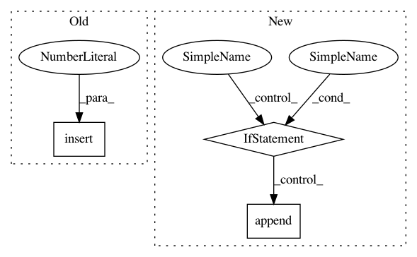

f31b7ad689b1435e76744af4ff443607643a37fd,studio/experiment.py,,create_experiment,#Any#Any#Any#Any#Any#Any#Any#Any#,116
Before Change
packages.insert(0, pkg._key + "==" + pkg._version)
elif pkg._key == "tensorflow-gpu" or pkg._key == "tf-nightly-gpu":
packages.insert(0, pkg._key[:-4] + "==" + pkg._version)
else:
packages.append(pkg._key + "==" + pkg._version)
return Experiment(
After Change
if pkg.startswith("-e git+"):
// git package
packages.append(pkg)
elif "==" in pkg:
// pypi package
key = re.search(r"^.*?(?=\=\=)", pkg).group(0)
version = re.search(r"(?<=\=\=).*\Z", pkg).group(0)
if resources_needed is not None and \
int(resources_needed.get("gpus")) > 0:
if (key == "tensorflow" or key == "tf-nightly"):
key = key + "-gpu"
// TODO add installation logic for torch
packages.append(key + "==" + version)
return Experiment(
key=key,
filename=filename,
In pattern: SUPERPATTERN
Frequency: 3
Non-data size: 3
Instances
Project Name: studioml/studio
Commit Name: f31b7ad689b1435e76744af4ff443607643a37fd
Time: 2017-12-28
Author: peter.zhokhov@sentient.ai
File Name: studio/experiment.py
Class Name:
Method Name: create_experiment
Project Name: explosion/thinc
Commit Name: 74687cc0a418af49418a80a62144222453af489f
Time: 2017-01-02
Author: honnibal+gh@gmail.com
File Name: thinc/neural/base.py
Class Name: Model
Method Name: __init__
Project Name: cmu-db/ottertune
Commit Name: c423a4d435e723c8636d95e5c43eee6f17865732
Time: 2020-03-19
Author: dvanaken@cs.cmu.edu
File Name: server/website/website/db/base/target_objective.py
Class Name: TargetObjectives
Method Name: get_metric_metadata